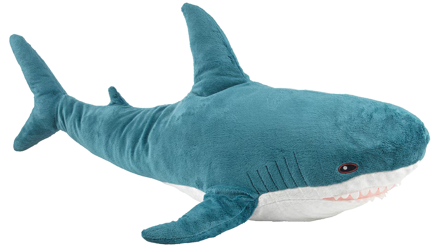

Blåhaj: Žralok, mýtus, legenda
Čo je to „Blåhaj”?
Blåhaj [ˈblôːhaj] je najväčšia ikona 21. storočia. Je mäkký na dotyk, jeho modré chĺpky hrajú všetkými farbami dúhy, má maškrtné zúbky a dve hnedé očká. Z morí švédskej IKEY doplával po rieke Labe až do našich končín a priniesol so sebou svetový mier. Každý, kto Blåhaja stretol, hovorí, že jeho život bol navždy zmenený. Experti sa zhodujú, že častým úkazom po prvom zoznámení je nevysvetliteľná túžba navštíviť najbližší obchodný dom IKEA a zadovážiť si vlastného Blåhaja.

Malý Blåhaj. Zdroj: IKEA
Druhy Blåhaja
| Malý Blåhaj | Veľký Blåhaj | Farebný Blåhaj |
|---|---|---|
| dĺžka: 55×1010 pikometrov | dĺžka: 0,1 kilometra | dĺžka: 55 centimetrov |
| index mäkkosti: 125 mäkkýšov | index drsnosti: 64 drsňákov | index radosti: 729 harmonických radov |
| farba: niečo medzi cibulákovou a letnobúrkovo rozmarnou | farba: babičkovomalinovkovo-letnobúrkovorozmarná | |
| ostrosť zubov: nízka | ostrosť pohľadu: vysoká | rarita: vysoká |
| najlepšie využitie: vankúš | najlepšie využitie: hrejivé objatie | |
Ak súdite Blåhaja, nemáte čas milovať ho.
–Matka Tereza
Ako si zadovážiť Blåhaja?
Je to vskutku jednoduché! Blåhaj je v dnešnej dobe pomerne rozšírený druh. Existujú dva zaručené spôsoby, ako získať vlastného Blåhaja.
Etická cesta
Vezmite do ruky najbližšie múdre zariadenie, napríklad vašu Samsung Smart chladničku alebo vašu kalkulačku TI-83. Otvorte prehliadač alebo aplikáciu Mapy. Do vyhľadávacieho políčka zadajte štyri písmená: I, K, E, A. Teleportujte sa do najbližšej IKEY, v týchto končinách pravdepodobne na Čerňák alebo do Zličína. Uneste zamestnanca a odmietnite ho pustiť, pokým vám neukáže, kde bývajú Blåhaje. Rozlúčte sa s 300 alebo 600 korunami, alebo náhle zistite, že na Slovensku sa dá Blåhaj adoptovať za zlomok tejto ceny. Uvedomte si, že nechcete ísť na Slovensko. Odídťe z IKEY s prázdnymi rukami, poprípade s náhodnou stoličkou.
Temná cesta
Nájdite najbližšiu osobu. Zaručene pozná aspoň jedného Blåhaja alebo inú osobu, ktorá vás dovedie k Blåhajovi. Hľadanie novej osoby opakujte nanajvýš šesťkrát, kým sa nedostanete k osobe, ktorá určite pozná Blåhaja. Spriateľte sa s touto osobou a počkajte, kým vás zoznámi s Blåhajom. Uneste Blåhaja, urýchlene opustite republiku a následne Schengenský priestor, presťahujte sa do Austrálie, zmeňte si meno a dúfajte, že vás nikdy nechytia. Blåhaj je váš!
Tretia, horšia cesta
Využite kombinované služby Slovenskej a Českej pošty a objednajte si lacnejšieho Blåhaja zo Slovenskej IKEY. Tento spôsob výrazne neodporúčame, Blåhaj by sa mohol pri preprave stratiť a dostať depresiu alebo by doručenie trvalo tak dlho, že by umrel na starobu.